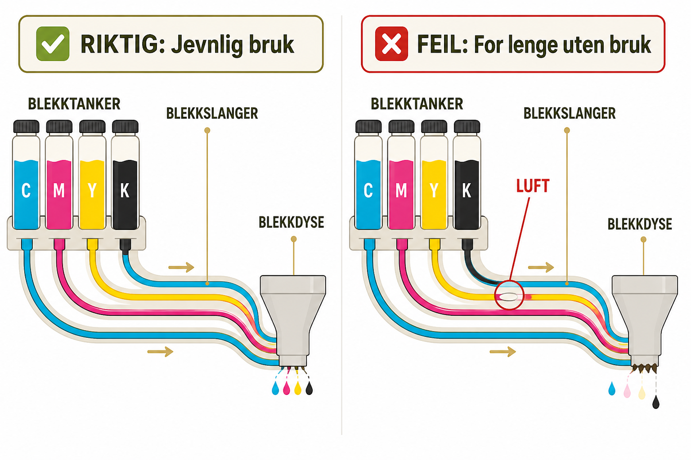

1. Slik fungerer skriveren din
For å forstå hvorfor vedlikehold er viktig, må du vite litt om hvordan blekket beveger seg for å komme ut på papiret.
Blekkflyten fra tank til dyse

Skriveren din har fire blekktanker (cyan, magenta, gul og sort). Fra tankene går blekket gjennom tynne slanger som bukter seg inni skriveren, og ender opp i blekkdysa.
Blekkdysa er lettest forklart formet som en slags trakt. Der skal blekket gjennom masse bittesmå hull når den printer, før det treffer arket. Derfor er det viktig at vi holder denne trakten åpen.
Dersom noe blekk blir stående for lenge og koagulerer, så vil dette oppføre seg nesten litt som skorpe på et sår, og bli til "flak" som kan sette seg fast i noen av disse små hullene i dysa. Og hvis det først skjer, og noe stetter seg fast, er det desto vanskeligere for oss å kunne få tryllet dette løst igjen.
Det er derfor vi er så nøye på å presisere viktigheten av å printe og vedlikeholde printeren din ofte. Her kan du lese mer i dybden om hvordan dette skjer.
Hva skjer når skriveren står for lenge uten bruk?
To ting kan da skje:
1. Luft i slangene
Når blekket ikke beveger seg på en stund, kan det oppstå luft i slangene. Dette kan gi deg striper i printen, og vil kunne gi deg avvik i mønsteret når du tar en dysesjekk. Blekkslangene har en bueformet plassering. og blekket foran denne buen (nærmest dysa) renner da ned mot dysa når man tar en hoderengjøring. Blekket bak denne buen i slangen vil da trekke seg tilbake mot tanken pga tyngdekraften som skapes av denne bueformede posisjonen av slangen.
Dette betyr at du fortsatt kan printe en stund med det blekket som allerede ligger i dysa. Men plutselig stopper det opp, selv om dysesjekken så fin ut i går. Det er fordi luften blokkerer tilførselen av tilstrekkelig blekk fra tanken.
Typiske tegn:
Dysesjekken var fin i går, men i dag mangler det plutselig farger. Du har da mest sannsynlig luft i slangene, og trenger å ta en hoderengjøring. Les mer om dette her; 4. Hoderens og trykkrens – steg for steg
2. Blekket størkner i dysa
Hvis blekket ligger stille i dysa for lenge, begynner det ettere hvert å tørke og koagulere. Når blekket begynner å koagulere, vil dette blekket da oppføre seg nesten litt som skorpe på et sår, og bli til "flak" som kan sette seg fast i noen av disse små hullene i dysa der blekket skal ut for å treffe arket. Og hvis det først skjer, og noe blekk setter seg fast, er det desto vanskeligere for oss å kunne få tryllet dette løst igjen, fordi blekkflakene er større enn hullene. Så dersom man ikke får løsnet problemet med en gang det oppstår, så vil det kunne bli permanent når disse blekkflakene kiler seg fast.
Dette viser seg som striper når du printer, og som avvik i mønsteret når du gjennomfører en dysesjekk. Men dette mønsteret i dysesjekken kan ha en tendens til å sitte fast på samme sted hver gang du renser og gjennomfører nye dysesjekker. Når samme avviket i dysesjekken blir sittende fast på samme sted over tid, så betyr dette ofte at det begynner å bli fare på ferde, og den beste måten å forebygge dette på, er at man opparbeider seg en god strategi for å gjennomføre en full runde med vedlikeholdsrutine jevnlig. For det er jo slik at jo mer du bruker printeren, og gir den en god blekkflyt, jo lettere kan du forebygge problemer. Men på sikt vil det dukke opp utfordringer, men du vil lettere kunne løsne dem opp på egenhånd hvis du allerede har gode vedlikeholdsrutiner.
Typisk tegn:
Dysesjekken viser brutte linjer eller hull i mønsteret på samme plass ved gjentakende hoderengjlring og dysesjekker. Dette betyr ofte at blekket har begynt å tørke i dysa, og det haster å få gjennomført en full vedlikeholdsrutine. Les mer i dybden om dette her; 4. Hoderens og trykkrens – steg for steg
Derfor er jevnlig bruk det aller viktigste
Når du printer jevnlig (flere print minst én gang i uken), oppnår du følgende:
- Blekket holdes i bevegelse gjennom slangene, og pga slangenes buete form, er dette det aller viktigste steget
- Luft får ikke sjansen til å bygge seg opp i slangene over tid
- Blekket i dysa holdes fuktig og tørker ikke så fort
- Du oppdager små problemer før de blir større og permanente
Gylden regel
Print noe med alle fire farger minst én gang i uken. En enkel dysesjekk eller et lite testbilde er dessverre ikke nok for å få god nok bevegelse i blekkflyten.
Derfor anbefaler vi ukentlig print med 3-5 kopier av dokumentet CMYK-CHART (cyan, magenta, gul og sort) som da trekker like mye blekk fra hver av dysene. Vi anbefaler da å printe 3-5 eksemplarer om gangen for å få en større bevegelse av blekk gjennom systemet. Dette dokumentet finner du inne i "Sublimering" mappen vi satte opp for deg under oppstartsveiledningen, inne i undermappen som heter "Vedlikehold".
Dersom dette ikke er nok, trenger man av og til noe mer fordi det dukker opp noen små avvik i dysesjekken også etter hoderengjøring. Inne i mappen "Vedlikehold" kan du da også finne noen egne dokumenter som heter 100 % magenta, sort, cyan og yellow. Dersom du ikke har disse, så kontakt oss gjerne slik at vi får lagt disse inn hos deg. Lese mer om hvordan disse skal brukes her: 4. Hoderens og trykkrens – steg for steg